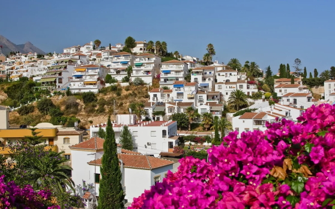
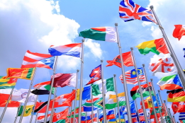
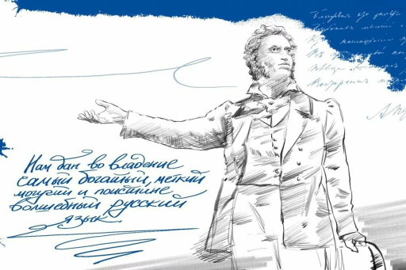
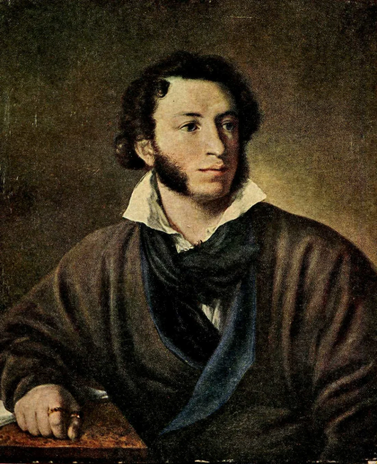

Проводимые в эти дни мероприятия направлены на обеспечение равноправия официальных языков, на повышение информированности сотрудников ООН об истории, о развитии языков ООН.
| Даты | Страна | Причины |
| 20 марта (День французского языка ) | Франция | Дата была выбрана в связи с празднованием 40-летием международной организации Франкофония, основанной в 1970 году |
| 20 апреля (День китайского языка) | Китай | Дата была выбрана для того, чтобы «воздать должное Цан Цзе, который, предполагается, изобрёл китайскую письменность около 5000 лет назад» |
| 23 апреля (День английского языка) | Великобритания | Дата была выбрана как «традиционно отмечаемый день рождения и дата смерти Уильяма Шекспира» |
| 18 декабря (День арабского языка) | Государства Западной Азии и Северной Африки | В честь утверждения в 1973 году решения о включении арабского языка в число официальных и рабочих языков |
| 23 апреля (День испанского языка) | испания | Дата была выбрана в честь известного писателя Мигеля Сервантеса |

История

Идею учреждения Дня русского языка впервые высказал автор проекта «Русская игра слов» Иван Клименко на страницах «Парламентской газеты» 26 декабря 2007 года.
В своей статье автор, подводя итоги Года русского языка, отмечает: «…опыт именного Года свидетельствует о том, что для непременного развития языка в каждом грядущем календарном году обязательно должен ещё быть и один именной День. День русского языка. Всемирный праздник для всего Русского мира».
Но ни законодательная, ни исполнительная власти России на предложение не отреагировали.
Ещё раньше, в 1996 году, День защиты русского языка 6 июня, в день рождения А. С. Пушкина, начала праздновать Русская община Крыма. Начиная с 2007 года в Крыму по их инициативе 6 июня стал проводиться Международный фестиваль русской, славянской культуры «Великое Русское Слово». Именно в этот день участников фестиваля на протяжении многих лет поздравляет Президент Российской Федерации.
6 июня 2011 года Президентом Российской Федерации Д. А. Медведевым подписан указ: «Установить День русского языка и отмечать его ежегодно, 6 июня, в день рождения великого русского поэта, основоположника современного русского литературного языка А. С. Пушкина».

А.С.Пушкин основоположник русского языка
Пушкин облегчил русский язык от громоздких церковно-славянских конструкций, анахронизмов и прочего мусора. Показал, как можно писать образно, но в то же время легко, так, чтобы понял и аристократ, и крестьянин.
Тургенев потом говорил, что именно Пушкин “дал окончательную обработку нашему языку, который теперь по своему богатству, силе, логике и красоте формы признается даже иностранными филологами едва ли не первым”.

Алекса́ндр Серге́евич Пу́шкин (26 мая [6 июня] 1799, Москва — 29 января [10 февраля] 1837, Санкт-Петербург) — русский поэт, драматург и прозаик, заложивший основы русского реалистического направления, критик и теоретик литературы, историк, публицист; один из самых авторитетных литературных деятелей первой трети XIX века.